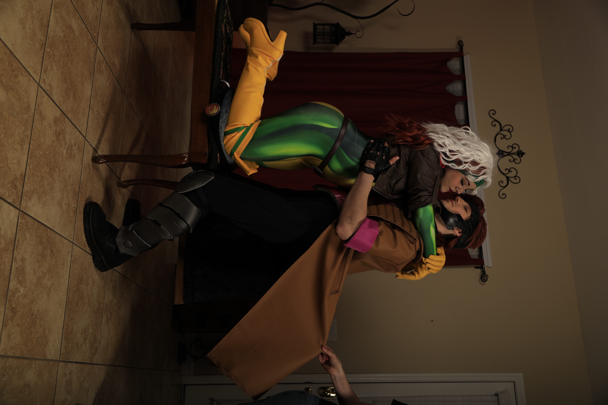

Gambit
This cosplay includes handmade armor, a weathered coat, a custom staff, playing-card props, and other details inspired by Gambit's design.
Cosplay Portfolio
Welcome to Cloaked in Cosplay, a cosplay project created by Aiden Smith and Antonella Malfi. This page showcases our Rogue and Gambit costumes, handmade props, costume details, and photography.
View the Cosplays
Cloaked in Cosplay is a cosplay brand created by Aiden Smith and Antonmella Malfi. We chose Rogue and Gambit because they are our favorite X-Men characters, and we are both huge fans of the comics. Their designs, personalities, and relationship made them the perfect characters for us to recreate together.
This cosplay includes handmade armor, a weathered coat, a custom staff, playing-card props, and other details inspired by Gambit's design.

Rogue's cosplay includes a styled wig, makeup, gloves, boots, accessories, and costume details. The main bodysuit was the only major part that was not handmade.
We made nearly the entire cosplay ourselves. The process included creating and painting Gambit's armor, weathering the coat, building the staff, styling Rogue's wig, preparing the accessories, and putting together the final costume details.
Making the costumes ourselves allowed us to adjust each part and create versions of the characters that felt personal while still staying recognizable to fans of the comics.
Keep posted for future cosplay projects from Cloaked in Cosplay. Our next costumes will be inspired by Critical Role. We will be sharing more progress, photos, and behind-the-scenes updates as the builds continue.
Follow Cloaked in Cosplay
Follow our TikTok for cosplay videos, costume progress, photoshoots, and behind-the-scenes content.
Visit Our TikTok